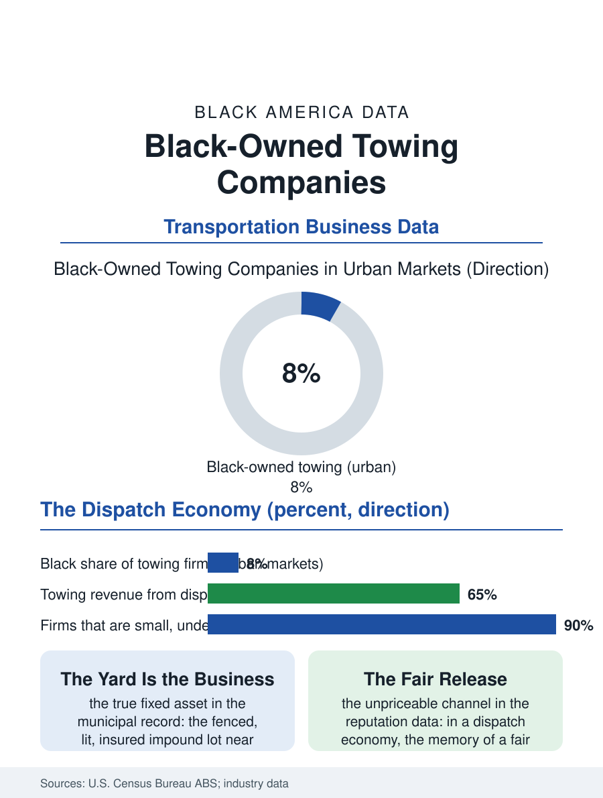

Black Business
The Worst Hour: Black-Owned Towing Companies
Towing is a dispatch economy gated by police rotations and motor club algorithms, where reputation at a customer's worst hour is the Black firm's durable asset. The towing file.

The tow truck arrives at the worst hour of a car owner's year, and the industry behind it, towing and roadside recovery, is a dispatch economy of police rotations, motor club contracts, and private lot enforcement, fragmented into thousands of small firms. Black-owned towing companies operate throughout it, substantially in the urban markets, holding a modest share of an industry whose gates are municipal lists and insurance networks. This article reads the towing file.
Rotations, Contracts, and the List
Towing demand originates in three channels with three different economics. Police towing, accidents, abandoned and impounded vehicles, flows through municipal rotation lists and contracted impound lots, entry to which is a political-administrative process of applications, inspections, and lot requirements, since the impound yard itself, fenced, lit, insured, near the city it serves, is the business's true fixed asset. Motor club and insurance roadside work, the jump-starts and lockouts and highway recoveries dispatched by the national networks, pays by the call at rates the networks set, volume in exchange for margin, with the firm's rating in the dispatch algorithm functioning as its storefront. Private property towing, the enforcement of parking in lots and apartment complexes, is the industry's reputational swamp, regulated city by city after decades of documented abuse in the worst markets, and the reputable firms of every background treat the segment with contractual care or avoid it. Black-owned towers cluster in the first two channels in their home cities, where the rotation slot, once won, is an annuity of dispatched work, and where the firm's standing with the police district, the body shops, and the motor clubs compounds across years into the closest thing the industry has to a brand.
Trucks, Yards, and the Night Shift
The capital file is concrete: a modern rollback costs well into six figures, heavy wreckers several times that, and the fleet decision, which trucks for which calls, is the firm's strategy made visible. Financing follows the trades pattern, the owner's credit standing behind the trucks, with the impound lot's land, often held for decades in industrial districts now appreciating, quietly becoming the balance sheet's center, the car wash file's land pattern in a second uniform. Labor is the binding constraint as everywhere in the trades: towing is night and weather work, dangerous on the shoulder in ways the occupational data record grimly, move-over laws existing because towers die at the roadside at rates that shame the driving public, and the firms that retain drivers pay for the danger and staff the dispatch with the owner's own family in the classic pattern. The industry's service frontier is response time, the networks grading firms by the algorithm's stopwatch, which rewards the multi-truck firm positioned across the metro and taxes the one-truck operator the industry was built on, pushing consolidation even here, as regional platforms assemble dispatched fleets under single brands.
Recovery as a Civic Trade
The file's closing reflection concerns the trade's civic function, which its data keep implying. The tow operator is a first responder in fact, first to the wreck, keeper of the impounded car that a family needs for work on Monday, holder of other people's worst days in a fenced lot, and the community's judgment of a firm is formed in those transactions and remembered for decades. Black towing firms in their home markets trade on that memory, the fair price at the bad moment, the car released without games, as deliberately as any business in this atlas trades on anything, because in a dispatch economy, reputation is the only channel the algorithm cannot set. The regulatory trend assists the reputable: municipal rate schedules, release-hour rules, and complaint-driven enforcement squeeze the predatory fringe that gave the industry its reputation, raising the relative position of the firms that never needed the squeeze. The towing file closes with the yard gate at dawn, the night's recoveries lined in the frost, the city's accidents made orderly by an industry nobody thinks about until the worst hour. Black owners hold their share of that order in the cities they serve, one rotation slot, one fair release, one 3 a.m. highway shoulder at a time, in a business whose entire equity is the memory of how it behaved when it had you.
More in Black Business
Black-Owned Businesses: Counts, Receipts, and the Representation Gap
About 161,000 Black-owned employer firms and three million solo ventures: how the Census Bureau counts Black business ownership, where firms concentrate, and the gap between population share and business share.
Black Median Net Worth: The Wealth Gap in Federal Reserve Data
The Federal Reserve puts Black median family net worth at $44,900, against $285,000 for White families — about 16 cents on the dollar. The widest gap in economic data.
Black Buying Power: The $1.8 Trillion Consumer Economy
Black buying power is estimated at about $1.8 trillion — larger than the economy of most nations. What the figure measures, who produces it, and what it buys.
Source: U.S. Census Bureau, Annual Business Survey (NAICS 48841); towing industry association data; municipal towing program records.